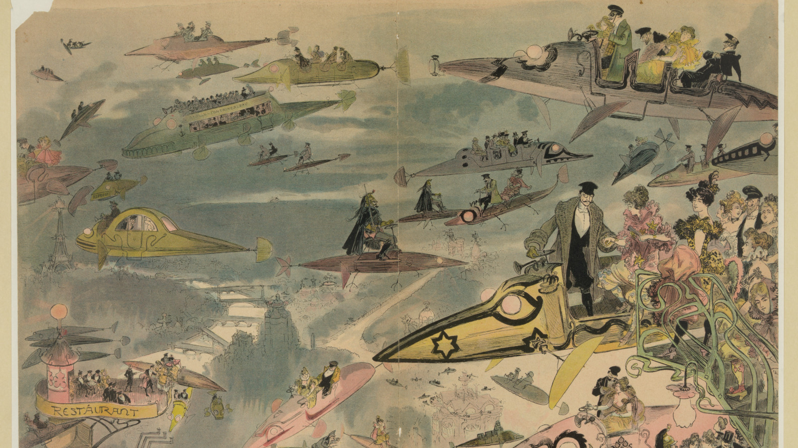
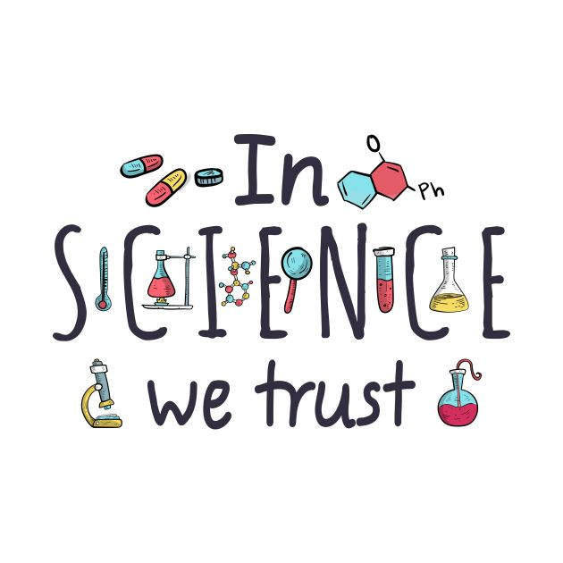
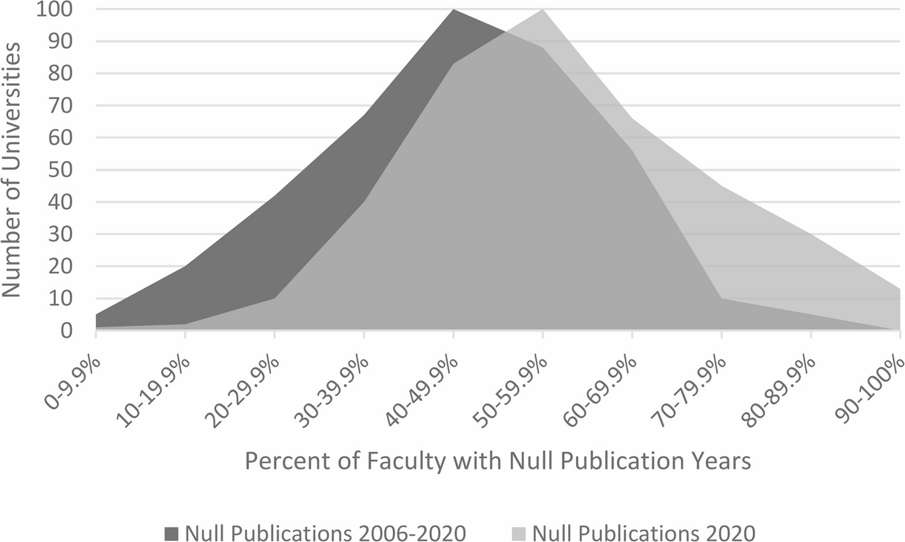
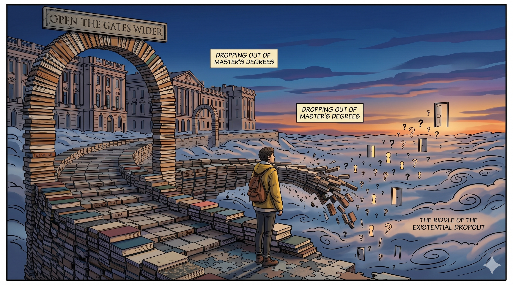
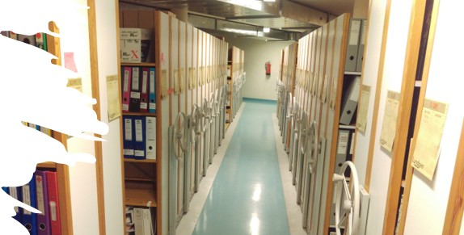
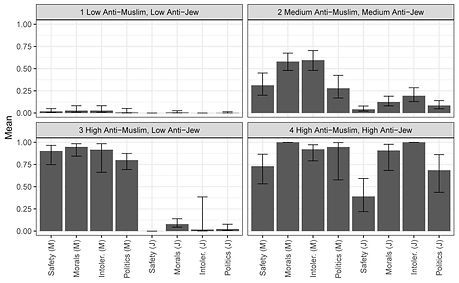
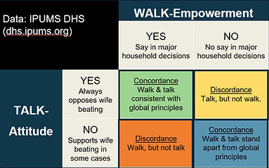

Research Projects
Ongoing Research
Illiberalism, Higher Education, and Academic Freedom
This project implements insights from sociological neoinstitutionalism to understand the cultural formations leading to the global spread of illiberalism. I examine the dismantling of chief liberal principles, such as academic freedom, and argue that contemporary global society has both liberal and illiberal institutional components. Using cross-national survey data, I analyze whether individuals' beliefs align with or decouple from the policies adopted by their countries.

Trust in Science and Illiberalism
Building on my work on global scripts, this project examines the association between countries' democratic and illiberal orientations and citizens' trust in science. I find that residents of democracies tend to report lower trust in science, whereas residents of illiberal regimes report higher trust, identifying science as a contested terrain in liberal societies and a locus of consensus in illiberal ones.

Computational Culture in Science
In collaboration with Liron Shani, I analyze the cases of the life sciences and digital humanities to study how patterns of scientific knowledge are changed by technology and emerging social interactions. We argue that computation entails a distinct mode of thinking, fostering an emergent culture that cuts across the traditional science-humanities divide.
Scientific Productivity in US Universities
Working with Keith Goldstein and Gad Yair, we unpack the inner workings of American science using a unique dataset covering the publication output of faculty in hundreds of research universities. We demonstrate that science is composed of distinct cultures with highly different productivity norms across the natural sciences, social sciences, and humanities.

Completed Research
The Dropout Study
For several years I served as a CO-PI (with Gad Yair) in a student attrition study at the Hebrew University of Jerusalem (funded by The Edmond de Rothschild Foundation, Israel). With data going back a decade, we utilized machine learning models to investigate the phenomenon of student dropout at both the undergraduate and master’s degree level. We encountered the riddle of existential dropout, namely, those students who leave despite an adequate academic record. Subsequently, we explored the Israeli program of affirmative action and found that students admitted through this route had a similar ratio of graduation as the general student population. Thus we called upon universities to open their gates wide.

Illiberalism and Judicial Independence
A longitudinal study (1960-2018) tracking the global erosion of judicial independence. I argue that contemporary global society has liberal and illiberal institutional components, and find a growing divide between states aligned with liberal world society and those connected to illiberal international organizations.
Dissertation: Humanitarianism & the UNHCR
My doctoral dissertation, titled "Humanitarianism, Development, and Human Rights," conducted a historical ethnography of the United Nations High Commissioner for Refugees (UNHCR). Tracking flows of knowledge enabled me to pinpoint changes in the humanitarian field and recognize the infiltration of development and human rights knowledge into the field.

The "Other" Other: Anti-Semitic and Anti-Muslim Views
In collaboration with Joseph Gerteis, I analyzed survey data to study the relationship between anti-Semitic and anti-Muslim views in America. Using nationally representative survey data (Boundaries in the American Mosaic survey), we explored forms of ethno-religious exclusion and found strong correlations with political and religious affiliations.

Women's Empowerment in Sub-Saharan Africa
Together with Elizabeth Heger Boyle, I examined how women enact global scripts of rights in 25 law- and middle-income countries. Focusing on household decision-making, we highlighted the interaction between world society norms and localized religious institutions.
